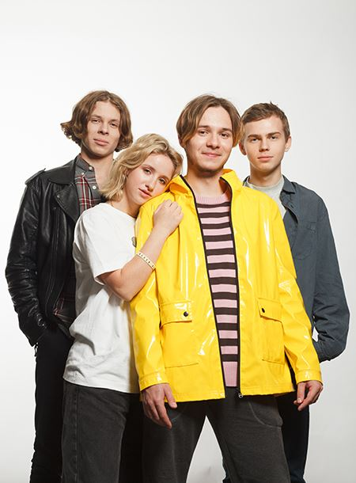

История появления группы
В мае 2018 года два талантливых волгоградских школьника, Давид Сайфуллоев и Леня Алешин, создали рок-группу, которую назвали «Папин Олимпос». У ребят не было ни связей, ни покровителей, а за быстрый творческий взлет им стоит поблагодарить Фортуну и талант. Первая созданная композиция, названная «Темно-оранжевый закат», оказалась удачной. В короткий срок она разлетелась по социальным сетям и музыкальным порталам. Неожиданно свалившуюся славу участники группы «Папин Олимпос» восприняли спокойно, продолжили упорно работать над созданием музыки. Уже в ноябре 2018 года создали альбом «Не перегорим». Дебют группы «Папин Олимпос» состоялся в родном городе Волгограде. Собралось около 250 человек, и это весьма неплохой старт для молодых рок-исполнителей. Второй концерт оказался не менее успешным. А на годовщину создания группы организаторы за 1,5 часа продали более 300 билетов. И это рекордная скорость продажи за всю концертную историю города Волгограда. 31 мая 2019 года группа «Папин Олимпос» отпраздновала год с даты создания. И для празднования есть повод: за столь короткий срок существования молодые рок-музыканты создали альбом, обрели популярность в интернет-среде, начали подготовку к турне. На их популярные композиции записано немало кавер-версий. Праздничный концерт состоялся в одном из самых посещаемых волгоградских баров – «Белая лошадь». Место выбрано не случайно. Еще будучи старшеклассником, Давид Сайфуллоев часто наведывался в это заведение, ему нравится здешняя атмосфера. Объясняя быструю и неожиданную популярность, создатель и лидер группы, Давид Сайфуллоев, как-то сказал в интервью, что каждый из участников живет любимым делом, усердно работает. Поэтому такой результат их кропотливого труда не кажется удивительным и странным.
Состав и биографическая справка участников
В инди-группе «Папин Олимпос» четыре участника: 
Давид Сайфуллоев
Про лидера и солиста группы «Папин Олимпос» известно больше всего информации. Парень родился в городе Волгограде, но сегодня живет и творит в Москве, увлекается экстремальными видами спорта. Его рост 178 см, а вес 71 кг. Давид, несмотря на молодые годы, – человек целеустремленный и смелый. Воспитывался в неполной семье, отца не знает. Закончил обычную общеобразовательную школу в Волгограде. Музыкой начал заниматься самостоятельно еще в начальных классах. Причем Давида сложно было назвать примерным учеником. Он был весь поглощен развитием музыкальных навыков, а остальные предметы его мало интересовали. Учителя закрывали глаза на наплевательское отношение парня к учебе только потому, что он регулярно получал призовые места на городских и региональных музыкальных конкурсах, чем повышал престиж школы. Кое-как окончив школу, Давид даже не задумался о дальнейшем получении образования, решил посвятить себя музыке. Музыкальную известность лидер группы «Папин Олимпос» получил уже в 9-ом классе. Создаваемые в тот период композиции он записывал на камеру, видео выставлял в интернет. Музыкальные произведения неизвестного волгоградского мальчишки регулярно набирали немалое количество просмотров, так росла популярность будущего солиста инди-группы «Папин Олимпос». Причем его музыку не только слушали, но и активно распространяли по интернету, использовали для создания кавер-версий. Что касается личных отношений, то Давид Сайфуллоев пока одинок. Но говорит, что обязательно создаст крепкую и счастливую семью, надеется, что станет хорошим отцом для будущих детей.
Даниил Сущенко
О Данииле известно немного. Это самый скрытный участник коллектива «Папин Олимпос». Родом он из Волгограда. Ребята ценят его как замечательного ударника, называют императором ритма.
Леоид Алешин
Талантливый бас-гитарист рок-команды «Папин Олимпос» родился 15 мая в Волгограде. Ведет страницу в Инстаграм: @weonthegraves. Его маму зовут Дарина Коволенко. Ребята называют своего бас-гитариста повелителем низких частот и человеком-сабвуфером.
Лиза Андреева
Единственная девушка в команде. Родилась 19 апреля 2000 года в Волгограде. Единственный участник коллектива «Папин Олимпос», имеющий специальное образование: Лиза закончила Волгоградское училище искусств имени Серебрякова. На своей Инстаграм-странице timeburner_I девушка, как настоящая ценительница искусства, написала: «Наверное, тем искусство и берет, что только утончает, но не врет». По словам других участников, Лиза – фанатка творчества Бродского. В людях ценит искренность. Ходят слухи, что юная клавишница встречается с лидером группы, Давидом Сайфуллоевым. Но ребята отрицают наличие отношений, утверждают, что пока все участники одиноки, заняты только творчеством.